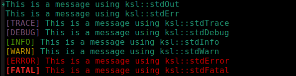

libStdOut
Functions to help print messages.
Overview
Functions to help print consistent messages.
Contains the following:
ksl::stdOut()
ksl::stdErr()
ksl::stdTrace() - prepends [TRACE] to the message
ksl::stdDebug() - prepends [DEBUG] to the message
ksl::stdInfo() - prepends [INFO] to the message
ksl::stdWarn() - prepends [WARN] to the message
ksl::stdError() - prepends [ERROR] to the message
ksl::stdFatal() - prepends [FATAL] to the message

Colors
Colors can be changed and applied to the introducer string as well as
the text of the message itself. So for example, [TRACE] would be
displayed in the COLOR_TRACE_INTRO color and the text of the trace
message would be displayed in the COLOR_TRACE_TEXT color. If
KSL_USE_COLOR is true, then the following colors are applied to
introducers and text.
COLOR_TRACE_INTRO=${FG_MAGENTA}COLOR_DEBUG_INTRO=${FG_MAGENTA}COLOR_INFO_INTRO=${FG_GREEN}COLOR_WARN_INTRO=${FG_YELLOW}COLOR_ERROR_INTRO=${FG_RED}COLOR_FATAL_INTRO=${BOLD}${FG_RED}COLOR_TRACE_TEXT=# default is terminal colorCOLOR_DEBUG_TEXT=# default is terminal colorCOLOR_INFO_TEXT=# default is terminal colorCOLOR_WARN_TEXT=# default is terminal colorCOLOR_ERROR_TEXT=${FG_RED}COLOR_FATAL_TEXT=${FG_RED}
An application can modify these colors as desired. See libColors for color setup.
Index
ksl::stdOut
Output text to standard out.
Does not embelish text with any introducer or color.
Example
ksl::stdOut "${scriptName} v${scriptVersion}"
Arguments
$1 (…): all args are printed to stdout
Exit codes
0: in all cases
Output on stdout
all the args

ksl::stdErr
Output text to standard error.
Does not embelish text with any introducer or color.
Example
ksl::stdErr "${scriptName} v${scriptVersion}"
Arguments
$1 (…): all args are printed to stdout
Exit codes
0: in all cases
Output on stderr
all the args
ksl::stdTrace
Output message to standard out prefaced by [TRACE].
If ksl::useColor is true then colors are applied.
Example
ksl::stdTrace "Entered: showConfig()"
outputs: [TRACE] Entered: showConfig()
Arguments
$1 (…): all args are printed to stdout
Variables set
COLOR_TRACE_INTRO (string): the color to use for the introducer
COLOR_TRACE_TEXT (string): the color to use for the text following the introducer
Exit codes
0: in all cases
Output on stdout
[TRACE] followed by all the args
ksl::stdDebug
Output message to standard out prefaced by [DEBUG].
If ksl::useColor is true then colors are applied.
Example
ksl::stdDebug "Entered: showConfig()"
outputs: [DEBUG] Entered: showConfig()
Arguments
$1 (…): all args are printed to stdout
Variables set
COLOR_DEBUG_INTRO (string): the color to use for the introducer
COLOR_DEBUG_TEXT (string): the color to use for the text following the introducer
Exit codes
0: in all cases
Output on stdout
[DEBUG] followed by all the args
ksl::stdInfo
Output message to standard out prefaced by [INFO].
If ksl::useColor is true then colors are applied.
Example
ksl::stdInfo "Entered: showConfig()"
outputs: [INFO] Entered: showConfig()
Arguments
$1 (…): all args are printed to stdout
Variables set
COLOR_INFO_INTRO (string): the color to use for the introducer
COLOR_INFO_TEXT (string): the color to use for the text following the introducer
Exit codes
0: in all cases
Output on stdout
[INFO] followed by all the args
ksl::stdWarn
Output message to standard out prefaced by [WARN].
If ksl::useColor is true then colors are applied.
Example
ksl::stdWarn "Entered: showConfig()"
outputs: [WARN] Entered: showConfig()
Arguments
$1 (…): all args are printed to stdout
Variables set
COLOR_WARN_INTRO (string): the color to use for the introducer
COLOR_WARN_TEXT (string): the color to use for the text following the introducer
Exit codes
0: in all cases
Output on stdout
[WARN] followed by all the args
ksl::stdError
Output message to standard error prefaced by [ERROR].
If ksl::useColor is true then colors are applied.
Example
ksl::stdError "Entered: showConfig()"
outputs: [ERROR] Entered: showConfig()
Arguments
$1 (…): all args are printed to stderr
Variables set
COLOR_ERROR_INTRO (string): the color to use for the introducer
COLOR_ERROR_TEXT (string): the color to use for the text following the introducer
Exit codes
0: in all cases
Output on stderr
[ERROR] followed by all the args
ksl::stdFatal
Output message to standard error prefaced by [FATAL].
If ksl::useColor is true then colors are applied.
Example
ksl::stdFatal "Entered: showConfig()"
outputs: [FATAL] Entered: showConfig()
Arguments
$1 (…): all args are printed to stderr
Variables set
COLOR_FATAL_INTRO (string): the color to use for the introducer
COLOR_FATAL_TEXT (string): the color to use for the text following the introducer
Exit codes
0: in all cases
Output on stderr
[FATAL] followed by all the args